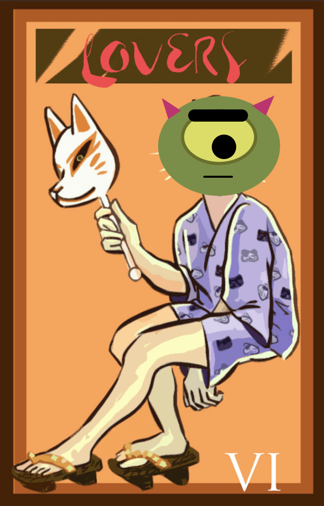
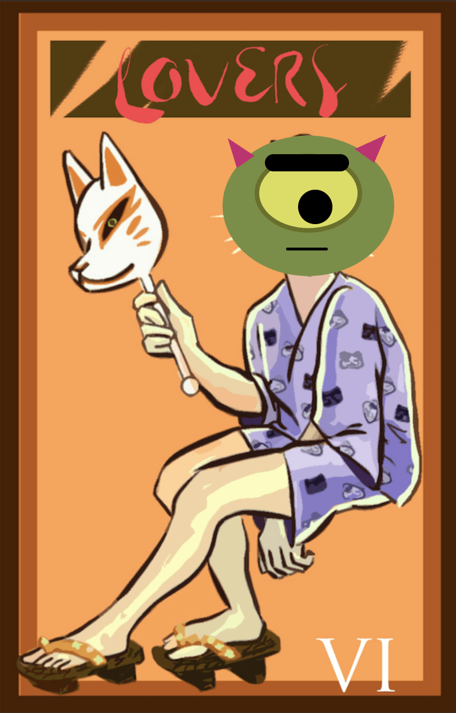
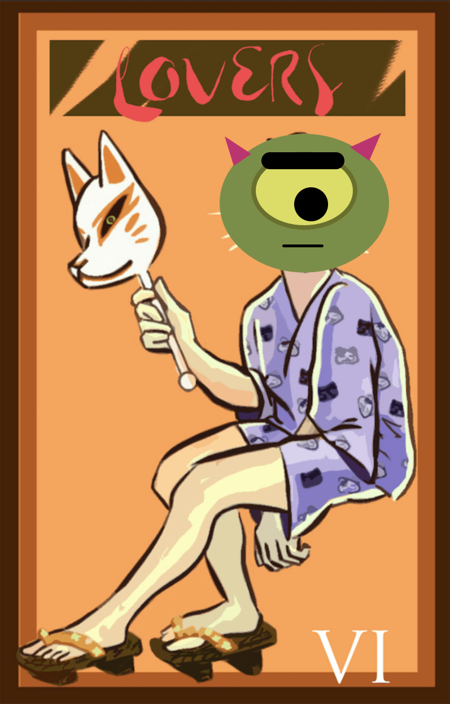

Your first instinct will most likely be to associate this card as representing love, but, much like love, it does not possess a simple nature. Not only does love comes in many forms, but the Lovers may indicate important or difficult choices ahead in your life. This is bad, in that the choices it portends are generally mutually exclusive, paths to two very different futures, but also good, in that it also confirms that at least one of those paths will take you to a good place. As such, if you happen to find it in your spread, you should consider it carefully, but not fear it. It tells a story of difficult choices, likely painful, but that the correct decision and a positive outcome are within your grasp.

Description from trustedtarot.com